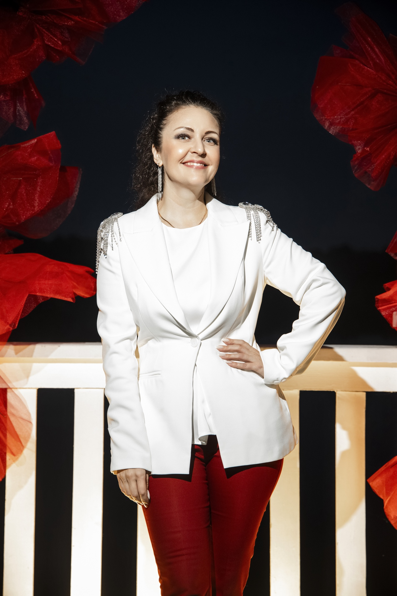
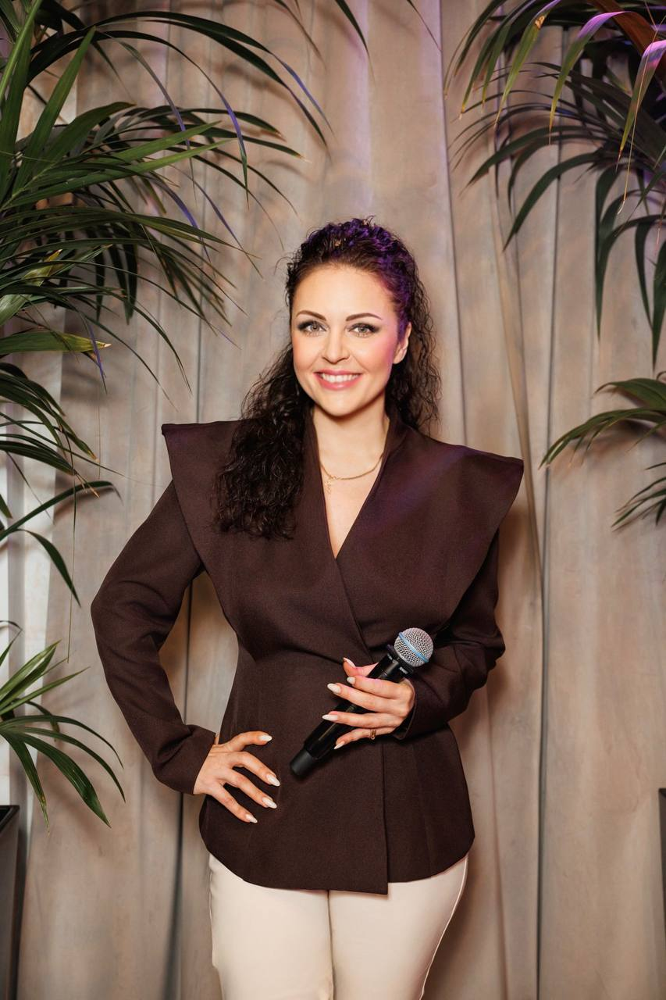

ЗНАКОМСТВО
БЕЗ НЕЛОВКОСТИ
Начало вечера, в котором гостям легко включиться в происходящее. Внимание к людям и комфортный темп.
WELCOME / ПЕРВЫЕ ЭМОЦИИТот самый вечер,
который объединяет команду.

LET’S CELEBRATE TOGETHER
В центре внимания — ваши гости.Я — Татьяна Шелест, современная ведущая и руководитель event-агентства. Организую и веду события в Москве и Московской области.
Слышу пожелания заказчика, чувствую настроение зала и помогаю гостям стать частью одного большого праздника.
Ваши истории, свои шутки,
общие победы. И настроение,
которое хочется забрать с собой.
Начало вечера, в котором гостям легко включиться в происходящее. Внимание к людям и комфортный темп.
WELCOME / ПЕРВЫЕ ЭМОЦИИВ программу можно включить итоги года, награждения и личные истории. Всё, что делает праздник именно вашим.
КОМАНДА / ОБЩИЕ ПОБЕДЫОбсудим квизы, командные игры и другие форматы участия. Подберём то, что подходит гостям и задачам вечера.
ДВИЖЕНИЕ / УЧАСТИЕТёплые слова, музыка и общее ощущение: этот год мы прожили вместе. Финальный акцент в истории праздника.
МУЗЫКА / ВОСПОМИНАНИЯЭто возможные элементы программы. Состав, продолжительность и участие подрядчиков согласуем индивидуально.
Св адьба - это самое первое торжество в жизни семьи. Это один из немногих праздников, который не повторяется. Именно к этому событию в жизни наших клиентов у нас самое трепетное отношение. Свадьбы - это то, с чего мы начали нашу работу, и то, что невозможно разлюбить. «Заказать свадьбу под ключ в Москве — доверьте нашему ивент-агентству организацию идеального дня.»
О рганизов ываем праздники от 1 годика и старше. Вы мечтаете о празднике, а мы его с удовольствием воплощаем в жизнь. «Организация юбилея в Москве с полным сопровождением — от ведущего до оформления.»
Организуем масштабные события для вашей компании, от конференций и тимбилдингов до юбилеев и новогодних корпоративов. Наша команда позаботится о каждой детали. «Проведение корпоратива в Москке: ивент-агентство с 18-летним опытом возьмёт всё на себя.»
-Вып ускн ые (от детского сада до университета) -Тематические вечеринки -Квизы и Телепроекты -Тимбилдинги -Иммерсивы Мы поможем вам с выбором темы, создадим уникальный сценарий, подберем артистов и развлечения, а также позаботимся об оформлении, техническом обеспечении и пост-продакшене. «Ивент-агентство Москва: выпускные, тематические вечеринки, тимбилдинги под ключ.»
Сделаем и это семейное и такое трогательное событие неповторимым и незабываемыми! Мы предоставим вам все необходимое: от разработки концепции и сценария до технического обеспечения. «Организация гендер пати в Москве — уникальный сценарий, оформление и ведущая.»
Дата, площадка, количество гостей и настроение, которое вы хотите создать.
Собираем ваши пожелания, истории компании и подходящие элементы программы.
Фиксируем сценарий, тайминг, стоимость и задачи всех участников подготовки.
Вы проводите время с командой. Я веду вечер и поддерживаю его настроение.
Стоимость зависит от даты, продолжительности, площадки и программы. Напишите детали события — обсудим формат и подготовим индивидуальное предложение.
Да. Кроме ведения мероприятия, команда Татьяны занимается организацией праздников: концепцией, поиском площадки, подбором подрядчиков и координацией. Состав услуг и бюджет обсуждаются отдельно.
Основные направления — Москва и Московская область. Для другой локации напишите город: возможность выезда и условия обсудим лично.
Оставьте имя и телефон в форме ниже. Заявка отправится Татьяне в MAX прямо с сайта. Она уточнит доступность и свяжется с вами по указанному телефону. Отправка заявки сама по себе не бронирует дату.